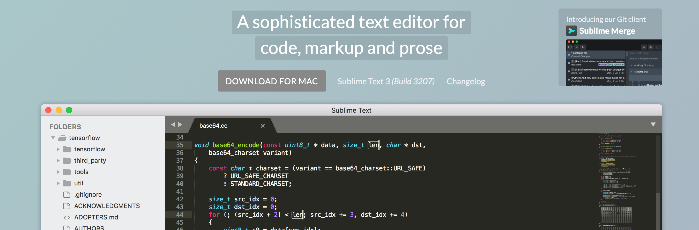

Sublime text is one of the most popular text editors at present. It is a modern text editor with beautiful interface, smooth operation, fast start-up, low resource consumption, and many useful plug-ins. It is a good choice for people who often write programs.
Install

Sublime Text 的最新的版本是 Sublime Text3 Build 3207 ,这是一个收费的版本，但是可以免费无限期试用，安装完之后在 view 里面可以设置 side bar 的显示以及 minimap 的显示，同时可以在 preferences 里面设置 color scheme、 theme 和 font。
Plug-ins
Sublime text有非常多的好用的插件，这些插件能极大的提高我们的工作效率，在安装插件之前需要先安装 Package control ，这是一款管理其他插件的插件。有了它，我们就能很方便的 install 和 remove 其他插件，极大的提高了我们配置 Sublime text 的速度。
Package control
这是一款便于我们管理插件的 Sublime text 插件，安装也比较方便，安装方法是依次点击： menu -> view -> show console 或者按快捷键 ctrl+~ 。之后底部会出现 console 框，然后输入以下代码
sublime text3
1 | import urllib.request,os,hashlib; |
sublime text2
1 | import urllib2,os,hashlib; |
当在 console 框中输入上面的代码之后，在 status bar 上会有安装进度提示，等完成之后当在 menu -> preference 中能看到 package control 时说明 package control 安装成功了，然后就能愉快的安装和管理其他插件了。
通过 package control 安装和删除插件的方法是依次点击： menu -> perference -> package control 或者快捷键 Ctrl+Shift+P (windows) / Command+Shift+p (mac) ,然后在弹出的输入框中输入 install package 并选中 install package 后点击enter，接着就可以在弹出的新的输入框中输入你想要安装的插件的名称，然后回撤就可以安装了。（当输入 remove package 之后就是删除插件，其他的过程和上面的一样）
Emmet
Emmet 这是一个 Sublime Text 必不可少的前端开发插件，堪称神器，它的前身就是大名鼎鼎的 zencoding，它使用仿 CSS 选择器的徐发来生成代码，大大的提高了 HTML/CSS 代码的编写速度。Emmet对于前端开发来说非常方便，下面简单的介绍以下它的使用方法。
HTML
1、初始化
Emmet 可以快速生成不同前端语言的模版，快捷键是 Tab
1 | html:5 或者 ! 用于生成 HTML5 文档类型 |
2、添加类、id、文本和属性
1 | div.boxclass 生成 class 为 boxclass 的 div 标签 |
3、嵌套
1 | > : 子元素符号，表示嵌套 |
4、分组
可以通过嵌套和括号来快速生成一些代码块，例如
1 | (div>h1)+(div>span) |
5、多个元素
如果想要定义多个元素，就可以使用 * 符号，使用方法如下
1 | ul>li*3 ul 标签下面会生成3个 li标签 |
6、动态属性
可以使用通配符，让 Emmet 在生成多个标签时出现不同的属性值，用法如下
1 | ul>li.class$*3 会生成三个 li 标签，class 值分别为 class1、class2、class3 |
CSS
1、属性值
常见的属性值的书写方法列举如下
1 | w44 生成 width:44px |
同时后面还可以加单位，单位列举如下
1 | p 表示 % |
2、模糊匹配
如果有一些缩写你没有记下，不确定，Emmet会根据你的输入内容自动匹配最接近的语法
DocBlockr
这是一个自动生成注释的插件，有了它，你就可以很方便的添加注释，可以省下很多时间，同时 DocBlockr 还可以支持自定义，你可以自定义自己的注释的样式。
Color Highlight
Color Highlight 这是一款颜色高亮显示的插件，非常好用，但是它的缺点是不能提取颜色。
Color Highlighter
Color Highlight 这也是一款颜色高亮的插件，它跟 Color Highlight 相比最大的不同就是可以提取颜色。
A File Icon
A File Icon 提供了一组漂亮的文件的 logo，不同的文件有不同的显示 logo，看起来很炫酷。
Git
Git 就不用我介绍了，他是个版本控制的插件，这个插件也是项目开发必不可少的。
Alignment
Alignment 是一款代码自动对齐的插件，使用快捷方式是 ctrl+alt+a
AutoFileName
AutoFileName 是一款输入文件路径时自动补全的插件，它可以快速帮你在文档中写路径。
BracketHighlighter
BracketHighlighter 是一款括弧高亮的插件，当代码太多时，好多括弧，看起来有点乱，有了这款插件，它会将不同的括弧以不同的颜色显示，让你的代码清晰明了。
Nodejs
Nodejs 这个就不需要我过多介绍了，可以提供 node.js 的自动提示。
SideBarEnhancements
SideBarEnhancements 是一款 side bar 右键增强的插件，有了它你就可以直接在 side bar 中右键在项目中添加文件或者删除文件，同时还有很多其他的功能，你们自己慢慢体会吧。
SyncedSidebarBg
SyncedSidebarBg 这款插件可以让你的 Sublime Text 的 side bar 的背景颜色和文本编辑区域的颜色保持一致。
ConvertToUTF8
ConvertToUTF8 可以将文件转码成utf-8格式，通过本插件，你可以编辑并保存目前编码不被 Sublime Text 支持的文件，特别是中日韩用户使用的 GB2312，GBK，BIG5，EUC-KR，EUC-JP ，ANSI等。ConvertToUTF8 同时支持 Sublime Text 2 和 3。
EncodingHelper
EncodingHelper 可以自动猜测你的文件的编码，并且显示在 status bar 上，将各种编码转换成为 UTF-8。
Codecs33
Codecs33 这款插件可以解决 Sublimt Text 在打开 GB2312 编码的文件时中文乱码的问题。
jQuery
jQuery 这款插件可以提供 jQuery 的自动提示功能，使用 jQuery 开发来说必不可少。
Vue
Vue 这款插件提供了 Vue 文件的高亮显示，使用 Vue.js 开发项目的话这款插件是必不可少的。
EJS2
ejs2 这款插件提供了对 .ejs 文件的高亮显示，如果开发中用到 EJS 的话这款插件必不可少。
Markdownediting
Markdownediting 是一款让 Markdown语法高亮显示的插件，如果你使用 Sublime 写 Markdown 文档，这款插件是必备的。
MonokaiC 是一款 sublime text3 下的主题，笔者推荐这款，安装方法如下
Install
First, install MarkdownEditing.
Package Control
Ctrl/Command + Shift + P to open the Command Palette
Select Package Control: Install Package
Search for MonokaiC
Press EnterManual
git clone https://github.com/avivace/MonokaiC ~/.config/sublime-text-3/Packages/MonokaiC
Change the target directory with ~/Library/Application\ Support/Sublime\ Text\ 3/Packages/MonokaiC on OS X and %appdata%\Sublime Text 3\Packages\MonokaiC on Windows.Activation
To enable the theme, open your preferred MarkdownEditing User setting file from Preferences > Package Settings > Markdown Editing > Markdown GFM Settings - USER (works with MultiMarkdown and Markdown Standard too) and put this:
2
3
"color_scheme": "Packages/MonokaiC/themes/ME-MonokaiC.tmTheme",
}Be sure to Set Syntax -> MarkdownEditing -> Markdown GFM on your Markdown files
然后编辑 Preferences > Package Settings > Markdown Editing > Markdown GFM Settings - USER 输入一下内容
1 | { |

欢迎访问 dusign 的博客，博客系统一键分享的功能还在完善中，请大家耐心等待。 若有问题或者有好的建议欢迎留言，笔者看到之后会及时回复。 评论点赞需要github账号登录，如果没有账号的话请点击 github 注册， 谢谢 !
If you like this blog or find it useful for you, you are welcome to comment on it. You are also welcome to share this blog, so that more people can participate in it. If the images used in the blog infringe your copyright, please contact the author to delete them. Thank you !